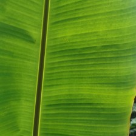
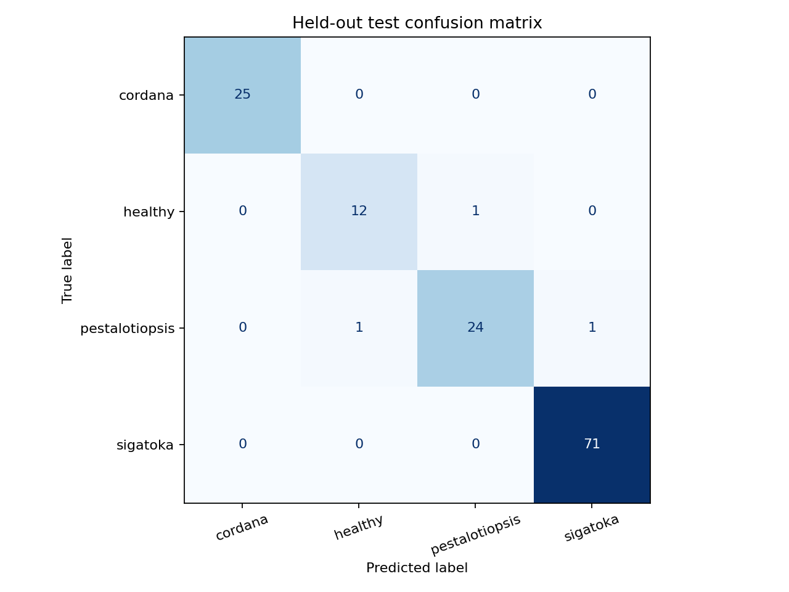
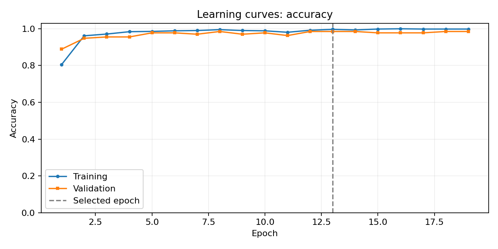

BANANA HEALTH • FARMER DECISION SUPPORT
A clearer leaf.
A better next step.
Check a banana leaf, understand the model result and find practical next steps for your farm.

Observe. Compare. Act with care.Original four-class leaf-spot model.
Add a clear leaf photo
Photos are processed locally and aren't kept by the app.
Try a real example
Known banana test imagesResult & next steps
A little insight is one photo away.
Choose a leaf photo or try a sample.
Your prediction and class scores will appear here.
Taking a closer look…
Checking photo suitability and comparing leaf predictions.
Unable to assess this photo
Use confirmation only for a known banana leaf. It overrides automatic subject screening.
PREDICTED CLASS
What you can do next
General guidance, not a confirmed diagnosis or a pesticide prescription. Local advice should guide treatment.
How the four classes compare
Model probabilityModel scores are not a confirmed diagnosis. Unrecognized subjects show Uncertain. Recognized or user-confirmed banana leaves receive a category; weak predictions are marked tentative.
Use natural light, keep the leaf in focus and include the affected area. Confirm banana identity only when you know the plant.
LOOK BEYOND ONE LEAF
How is the rest of your plant?
A leaf model cannot rule out wilt, viruses or problems in flowers and fruit. Use this checklist to decide when to ask for help.
Observe the whole plant.
Select the symptoms you can see. The checklist provides rule-based guidance, not another AI disease diagnosis.
UNDERSTAND THE POSSIBILITIES
Banana health guide
Four leaf classes are supported by the original model. The research preview adds Fusarium/Panama and Moko. Bunchy top and Xanthomonas wilt remain guidance-only; they are not AI prediction classes.
Loading the disease guide…
BEHIND THE PREDICTION
A look at model performance
These results measure the original four-class classifier on known banana dataset images. Performance on new farms and cameras may differ.


Training stopped after six epochs without lower validation loss. The weights from epoch 13 were restored.